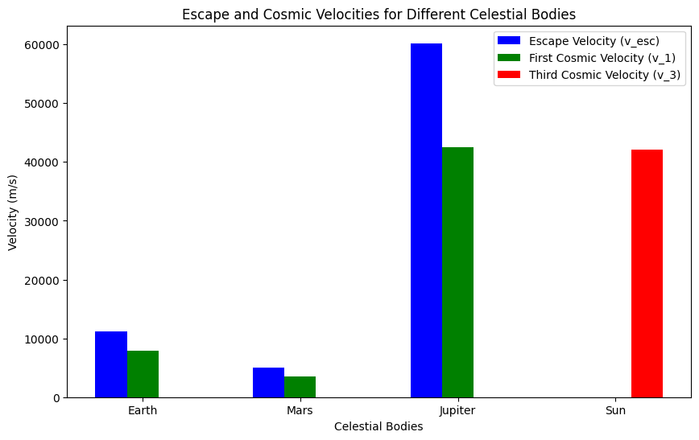

Escape Velocities and Cosmic Velocities
Motivation:
The concept of escape velocity is crucial for understanding the conditions required to leave a celestial body's gravitational influence. Extending this concept, the first, second, and third cosmic velocities define the thresholds for orbiting, escaping, and leaving a star system. These principles underpin modern space exploration, from launching satellites to interplanetary missions.
Task:
- Define the first, second, and third cosmic velocities, explaining their physical meaning.
- Analyze the mathematical derivations and parameters affecting these velocities.
- Calculate and visualize these velocities for different celestial bodies like Earth, Mars, and Jupiter.
- Discuss their importance in space exploration, including launching satellites, missions to other planets, and potential interstellar travel.
Definitions:
1. Escape Velocity (First Cosmic Velocity):
Escape velocity is the minimum speed an object must have to escape the gravitational influence of a celestial body without further propulsion. The formula for escape velocity is:
Where: - \(G\) is the gravitational constant \((6.67430 \times 10^{-11} \, \text{m}^3\text{kg}^{-1}\text{s}^{-2})\), - \(M\) is the mass of the celestial body (in kilograms), - \(R\) is the distance from the center of the celestial body (in meters).
2. First Cosmic Velocity:
This is the minimum velocity needed to orbit a celestial body in a circular orbit at the surface of the body. It is derived from balancing the gravitational force with the centripetal force for circular motion:
3. Second Cosmic Velocity (Escape Velocity):
This is simply the same as the escape velocity and describes the velocity required to escape the gravitational pull of the celestial body.
4. Third Cosmic Velocity:
The third cosmic velocity is the speed needed for an object to escape the gravitational influence of the Sun, enabling it to leave the solar system. It is given by:
Where: - \(M_{\odot}\) is the mass of the Sun, - \(R\) is the distance from the Sun.
Task Breakdown:
- The escape velocity depends on the mass and radius of the celestial body.
- The first cosmic velocity depends on the mass and radius as well.
- The third cosmic velocity depends on the mass of the Sun and the distance from the Sun.
Implementation and Visualization:
We'll implement a Python script to calculate and compare these velocities for different celestial bodies like Earth, Mars, and Jupiter. This will be followed by visualizations (graphs) to compare these velocities.
Python Code Implementation:
import numpy as np
import matplotlib.pyplot as plt
# Constants
G = 6.67430e-11 # Gravitational constant (m^3 kg^-1 s^-2)
M_sun = 1.989e30 # Mass of the Sun (kg)
M_earth = 5.972e24 # Mass of Earth (kg)
M_mars = 0.64171e24 # Mass of Mars (kg)
M_jupiter = 1.898e27 # Mass of Jupiter (kg)
R_earth = 6.371e6 # Radius of Earth (m)
R_mars = 3.396e6 # Radius of Mars (m)
R_jupiter = 6.991e7 # Radius of Jupiter (m)
R_sun = 1.496e11 # Distance from Earth to Sun (m)
# Function to calculate escape velocity
def escape_velocity(M, R):
return np.sqrt(2 * G * M / R)
# Function to calculate first cosmic velocity
def first_cosmic_velocity(M, R):
return np.sqrt(G * M / R)
# Function to calculate third cosmic velocity
def third_cosmic_velocity(M_sun, R):
return np.sqrt(2 * G * M_sun / R)
# Calculate velocities for different bodies
velocities = {
'Earth': {
'escape': escape_velocity(M_earth, R_earth),
'first_cosmic': first_cosmic_velocity(M_earth, R_earth),
},
'Mars': {
'escape': escape_velocity(M_mars, R_mars),
'first_cosmic': first_cosmic_velocity(M_mars, R_mars),
},
'Jupiter': {
'escape': escape_velocity(M_jupiter, R_jupiter),
'first_cosmic': first_cosmic_velocity(M_jupiter, R_jupiter),
},
'Sun': {
'third_cosmic': third_cosmic_velocity(M_sun, R_sun),
}
}
# Plotting the results
fig, ax = plt.subplots(figsize=(10, 6))
# Bar positions and labels
labels = ['Earth', 'Mars', 'Jupiter', 'Sun']
escape_velocities = [velocities['Earth']['escape'], velocities['Mars']['escape'], velocities['Jupiter']['escape'], 0]
first_cosmic_velocities = [velocities['Earth']['first_cosmic'], velocities['Mars']['first_cosmic'], velocities['Jupiter']['first_cosmic'], 0]
third_cosmic_velocities = [0, 0, 0, velocities['Sun']['third_cosmic']]
bar_width = 0.2
index = np.arange(len(labels))
# Plot bars for each velocity type
ax.bar(index - bar_width, escape_velocities, bar_width, label="Escape Velocity (v_esc)", color='b')
ax.bar(index, first_cosmic_velocities, bar_width, label="First Cosmic Velocity (v_1)", color='g')
ax.bar(index + bar_width, third_cosmic_velocities, bar_width, label="Third Cosmic Velocity (v_3)", color='r')
# Labels and title
ax.set_xlabel('Celestial Bodies')
ax.set_ylabel('Velocity (m/s)')
ax.set_title('Escape and Cosmic Velocities for Different Celestial Bodies')
ax.set_xticks(index)
ax.set_xticklabels(labels)
ax.legend()
plt.show()

Explanation of the Code
Constants:
We define the gravitational constant, the masses and radii of celestial bodies (Earth, Mars, Jupiter, and the Sun).
Functions:
escape_velocity: Calculates the escape velocity.first_cosmic_velocity: Calculates the first cosmic velocity.third_cosmic_velocity: Calculates the third cosmic velocity.
Calculations:
The escape and cosmic velocities are calculated for Earth, Mars, and Jupiter.
The third cosmic velocity is calculated for the Sun (escape velocity from the solar system).
Plotting:
The results are plotted as a bar chart with different colors representing each velocity type.
Graphical Representation
- X-axis: Represents different celestial bodies (Earth, Mars, Jupiter, and the Sun).
- Y-axis: Represents the velocity values in meters per second (m/s).
- Bars:
- One for escape velocity
- One for the first cosmic velocity
- One for the third cosmic velocity (only for the Sun)
Output (Graph)
The output will show a bar chart that compares:
- Escape velocities for Earth, Mars, and Jupiter
- First cosmic velocities for Earth, Mars, and Jupiter
- Third cosmic velocity for the Sun
This chart provides a visual comparison of how these critical velocities vary across different celestial bodies.
Importance in Space Exploration
-
Escape Velocity:
Determines how fast an object must travel to leave the gravitational pull of a planet. Crucial for launching satellites and spacecraft from any planet. -
First Cosmic Velocity:
Defines the minimum speed needed for a stable orbit around a celestial body. Important for satellite deployment and space station operations. -
Third Cosmic Velocity:
Describes the speed required to escape the gravitational influence of the entire solar system. Essential for planning interstellar missions.